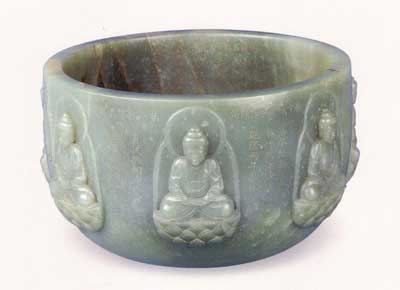
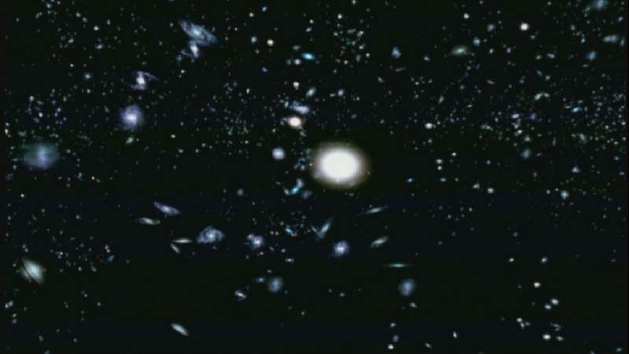
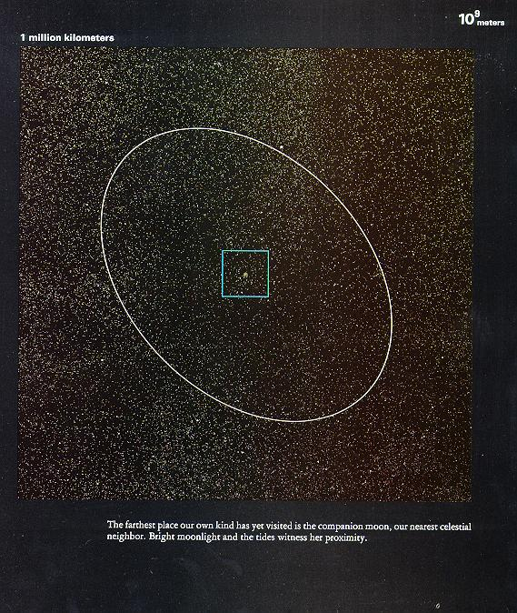
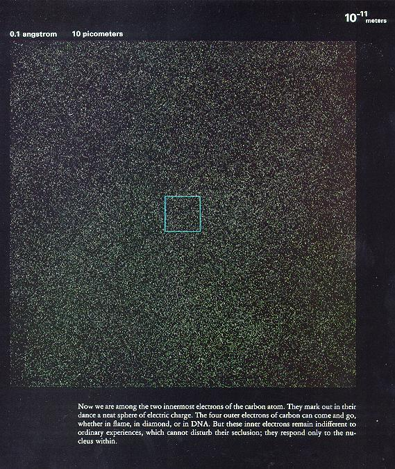
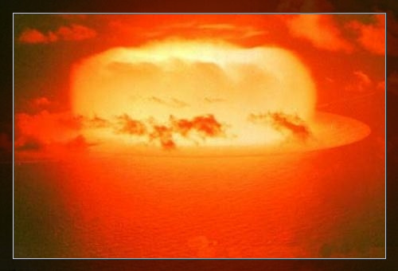

佛经是释迦牟尼佛在二千五百年前讲的。
佛在《金刚经》中自称：如来是真语者。实语者。如语者。不诳语者。不异语者。
佛在《无量寿经》中说：如来以无尽大悲。矜哀三界。所以出兴于世。光阐道教。欲拯群萌。惠以真实之利。难值难见。如优昙华。希有出现。……如来正觉。其智难量。无有障碍。能于念顷。住无量亿劫。身及诸根。无有增减。所以者何。如来定慧。究畅无极。于一切法。而得最胜自在故。
佛在《妙法莲华经》中说：诸佛世尊。唯以一大事因缘故出现于世。欲令众生开佛知见使得清净故。出现于世。欲示众生佛之知见故。出现于世。欲令众生悟佛知见故。出现于世。欲令众生入佛知见道故。出现于世。
佛在《修行道地经》《大宝积经》中描述了胎儿在母体内的发育过程。
佛在《治禅病秘要经》及《正法念处经》中告诉我们说：人身是个虫巢，大别之，有八十种虫。佛不但说出各种虫的名字，而且描绘了它们的动作形态。《毘尼日用》中说「佛观一钵水，八万四千虫」佛观一钵水，中有八万四千虫。佛陀时代是没有显微镜的，佛陀、阿罗汉们用天眼就可以看到一钵水中有无量的微生物。微生物在佛经中被称作户虫、太末虫等。

佛经上说，三千大千世界有十万万个太阳。现在用天文望远镜证明天空里所有密集的恒星，一个个都是太阳系。

佛在《楞严经》上讲白月黑月，不说圆月缺月，包含了月球反射日光的道理。
佛经上讲，人有生老病死生老病死的循环，宇宙有成住坏空成住坏空的循环。天文学家从夏威夷猫娜基山顶，用无线电望远镜摄得离地球十五光年之遥的猎人星云爆炸散开（坏归于空）之照片。后又用红外线镜头，摄得正在初步形成新星云（从空复成）的照片。
佛经上提到有比人类高级的有情众生叫转轮圣王，转轮圣王有一宝贝叫轮宝，可作交通工具及武器。乘坐轮宝一日内可游遍四天下（银河系）。现代有许多有关飞碟的记载。净空法师曾亲眼见过飞碟，并推测很可能就是轮宝。
中国物理学家黄念祖，半生注释佛经，著有《大乘无量寿经解》等。
中国电学家王季同，著有《佛法与科学的比较研究》。
科学家尤智表，曾就读于哈佛大学，任浙江大学教授，著有《一个科学工作者研究佛经的报告》，宣称佛学高于科学。
日本科学家松下真一，著有《法华经与核子物理学》。
《大方广佛华严经疏》中写道：“一一微尘中，各现无边刹海；刹海之中，复有微尘；彼诸微尘内，复有刹海；如是重重，不可穷尽，非是心识思量境界。”这段文字讲的就是宇宙在超宏观与超微观上的无限层次。
《大佛顶首楞严经》中写道：“如来藏唯妙觉明圆照法界。是故于中，一为无量，无量为一。小中现大，大中现小。不动道场，遍十方界。身含十方无尽虚空。于一毛端现宝王刹。坐微尘里转大法轮。”
物理学家在研究超弦理论的时候发现一个惊人的结果，半径1/r（比原子尺度还小1000亿亿亿倍）大小的空间中的物理形式和半径r的大尺度宇宙没有不同，换句话说，那么小的空间中可以容纳整个宇宙！！——请见美国物理学家M.格林《宇宙的琴弦》

上图：从太空望远镜中看地球（方框中央的球体），距离是10的9次方米。在宇宙中，地球就像一粒微尘一样。

上图：在显微镜下看一个人的手背，距离是10的负11次方米。手背皮肤内的微观粒子就像宇宙一样。
西方著名物理学家卡普拉，在他的《现代物理学与东方神秘主义》中说道：“《大方广佛华严经》与现代物理学理论有惊人的相似性。”
“量子力学迫使我们认识到，宇宙并不是物体的集合，而是统一体中各部分间相互关系的复杂网络。但这正是东方神秘主义体验世界的方式。他们所描述的经验与原子物理学家所使用的语言是极为相似的。”
“关于量子原理没有比这更重要的了，它推翻了关于世界可以‘座落在外’的概念……宇宙永远不会再次处于同样的状态。我们不是宇宙的‘观察者’，而是‘参与者’。宇宙就是自己的‘参与者’。”《楞严经》中写道：“色身外洎山河虚空大地，咸是妙明真心中物。”现代量子力学的发现却是佛在无量劫前早就亲证了的境界。
佛教关于宇宙年龄的定量接近于科学。朱芾煌《法相辞典》中解释一大劫『瑜伽二卷六页云：又此世间，二十中劫坏，二十中劫坏已空，二十中劫成，二十中劫成已住。如是八十中劫，假立为一大劫数。』——这样的话，一大劫相当于268.768亿年。我们处于成、住、坏、空四大劫的住劫。成劫住劫总共134.384亿年。现代宇宙运用从最先进检测手段如荷兰天文学家通过测定钍和钕两种元素比例，测得宇宙年龄是120亿年。
大科学家薛定鄂，是量子力学的权威，近来研究生命科学，薛氏说：“我在母胎时，并不是我生命的开始，我是依照了过去的蓝图，而出现我的生命。我的死亡，也并非我生命的结束。”薛氏之说，生前已有蓝图，死后生命并不结束，恰恰否定了人死如灯灭的俗论。至于“蓝图”，则相似于佛教所说的阿赖耶识，即第八识，此识含藏一切种子，我们的现在世与将来世都决定于此识中的种子。
爱因斯坦提出了“四维空时”，认为时间空间不可分割。而“世界”这一概念在诸佛经中屡次被提到，“世”代表时间上的过去、现在、未来三世，“界”代表空间上的东西南北上下，表明时间空间本不可分。当佛经传入中国以后，汉语中才有了“世界”这个名词，之前只有“天下”的说法。
爱因斯坦说：“物质是由场强很大的空间组成的……，在这种新的物理学中，并非既有场又有物质，因为场才是唯一的存在。物质和时间只是人们的错觉。”而佛经上告诉我们：“凡所有相，皆是虚妄。缘起性空，诸法无我。”
原子弹的爆炸，证明了爱因斯坦质量－能量转换定律(E=M*C*C 能量＝质量 x 光速的平方)的正确性。更让人们惊奇地认识到，这就是佛早已开示的“色即是空，空即是色”的真理。

美国著名的哈佛大学，设有佛学系、禅堂。英国牛津大学、剑桥大学也成立了佛学社。
爱因斯坦曾经说：“人生最后的领域，只能在宗教中才能找到答案。”
忆于注经（注：指《佛说大乘无量寿庄严清净平等觉经解》）之初，曾拟广引最新科学成就，以为譬喻，或作佐证。但动笔以来，始知此经广博幽深，浩若烟海。若再傍征科学，势必篇幅过巨。乃变初衷，舍繁就简。兹藉重印之机，乃于末后，稍谈科学，聊补前愿，略显结合科学以阐明佛理之方便。
余乃科技工作者，故常于讨论佛理时联系科学，听者每易领会。例如：人皆有佛性，生佛不二、生佛宛然等难明之旨，若以磁性喻佛性，以磁铁喻佛，以未经磁化之铁喻众生，则闻者易于得解。铁类等磁性物质皆有磁性，可喻众生皆有佛性。磁性之作用极大，例如发电机与电动机皆赖磁力而显功用。可见磁性不但是有，且作用无穷。但若从磁铁剖折磁性，觅其形体，则了不可得。正如傅大士所颂：「决定是有，不见其形。」磁铁与普通之铁，其本体并无分别。磁铁中电子运动轨道之方向一致，故有显著之磁作用。未经磁化之铁中，电子运动轨道杂乱，彼此方向不同。故所产生之磁作用，互相抵销，而不显磁性。若将此铁置于磁铁附近，铁中电子受到磁铁磁力之诱导，而排齐运动轨道之方向，于是立即显出磁力。可见磁铁与铁本体无异，故云「生佛平等」。加之以磁铁与铁所产生者，只是共同一个磁场，故云「生佛不二」。但铁实因磁铁之磁化作用，而成为磁铁，故云「生佛宛然」。由上可见，铁之异于磁者，只因其电子运动轨道杂乱。以喻众生所以异于佛者，只因妄念纷飞。从此譬喻，可助学人理解佛法。
上例乃就普通物理学而言。若联系近代物理学，则更令人震惊。上例仍为旧概念，从物质而产生场。但现代物理学则认为物质者，只是人之错觉。爱因斯坦曰：「物质是由场强很大的空间组成的……在这种新的物理学中，并非既有场又有物质，因为场才是唯一的存在。」爱氏指明物质形成于场（场乃具有能量强度之空间，其中并无一物），并唯有场是客观存在。另一大科学家赫尔曼？外尔亦谓：「一个物质粒子，例如电子，只是电场的一个小区域，其中场强的值很高，这表明在这很小的空间，集中了相当大的场强……事实上，任何时候也不存在构成电子的物体。」此上二人均谓物质只是场。另一科学家杜？布洛伊则认为「一切物质都是波（如无线电波）」。以上之说，皆显粒子二重性——颗粒性与波动性。所谓颗粒，正如爱氏等所指，只是场强较高的空间。故当代西方科学界先驱，艾德？蔡安指出：「宇宙物质各系统，一般可归纳为物质、能、电荷等等，一概都是归于零（空）。」以上论断，皆成为《心经》中「色即是空」之科学根据。
艾德？蔡安继云：「（一切所有）既归于空，当然亦能从空形成，随时均可成可灭。」又例如日本科学家松下真一所着之《法华经与核子物理学》曰：「阳电子和电子发生冲突（指碰撞等）时，在一刹那，所有粒子（指上述电子）都会消灭，而变成两个光子，成对的生成或消灭。」又「元质点的世界，是一个反复“生成”和“消灭”的世界。」又「这不就是佛教所说的“空即是色”以及“色即是空”之物质上（指物理学）的模样本身吗？」（此书中关于佛学精理之阐述，余虽未尽苟同。但著者曾在德国汉堡国立理论物理研究所，从事统一场论等研究工作十余年。故所介绍之科学内容，均可珍也。）
近代科学界不但从微观世界实验中，证明物质形成于空，变化坏灭，反复不已；并在宏观世界研究中，取得同样结论。天文学家霍金斯云：「星点旋系从强度高能的虚无之中形成。」科学家已证实大宇宙出生于虚空，各种天体（星云、星球）皆在不断运行，不断生成和消灭。从空而有，因有而住，从住坏灭，复归于空。例如猎人星座距地球十五光年，乃距地球最近之星座。从夏威夷猫娜基山顶，用无线电望远镜摄得猎人座星云爆炸散开（坏灭归空）后之照片，后复用红外线镜头，摄得正在初步又形成新星云（从空复成）之照片，此实为星云宇宙由老到坏、灭又再生之最佳科学证明。猎人星座现正处于形成之初步。如是新生之星体，其数无量。星体经成、住而衰老，乃发射红光，称为红光巨星。太阳系中之太阳再经六十亿年，即将老化为红光巨星。倘更趋衰老而濒临毁灭时，天文学家称之为白光矮星。因即将崩溃，乃竭尽残力，辐射白光。星体缩小，最后突然爆炸而毁灭，复归于空。宏观世界中反复迁变，吻合于佛说之宇宙规律—成、住、坏、空。
再者，天文编号为M87之无线电波星云旋系，从非物质之无线电波区，喷出长达一万光年之光炬，其中为高速高能电子。从非物质之中，亦即从虚空中，而射出物质，实为惊人发现。从「空」转变为「有」，故「有」之本源即是「空」。上述种种科学实验，若联系佛学，则显现为「有」即假谛；本体为「空」即空谛；空有不二即中谛。天台宗基本教义之空假中三谛三观，现正由科学实验而日获证明。
不但独立绝对之物质被科学界否定，时间与空间亦有同样遭遇。爱因斯坦相对论，抛弃牛顿氏绝对时空之概念，指出时间与空间皆是相对的。彼等皆依赖于观察者之状态。若观察者运动速度可与光速相比，当其相对于观察者之速度继续增加时，时间之间隔即将延长（亦即运动者之时钟变慢）。至于空间，（具长，宽，厚三维，兹以长度为例），相对论证明：一个物体之长度，与其相对于观察者之运动速度（可与光速相比）有关，速度续增，则此物体之长度在运动之方向收缩。由上可见：运动者所经历之空间与时间，均依赖其与观察者之相对运动速度。（所有与空间、时间有关之测量亦同样皆是相对的。）于是某一观察者视为同时发生之事，另一观察者则可能视为不同时。（浅例：假设有一列火车正以高速（可与光速相比）离开A处向B处飞驶。恰巧AB两处同时有闪电落地。车内人所见，则为B处之闪电先落。但AB中间C处有一人静坐。此人所见则两闪同时落地。）故知绝对独立之空与时，俱不存在，只是人之错觉。
相对论物理学中，于三维之空间坐标上，加入时间，作为第四维。两者相互联系，而构成四维时空连续区。四维空间之实况，当人之思念，未彻底脱离妄想执着之前，则无法了解。但可从三维与二维空间之对此，而猜测四维与三维空间对比之情况。人为三维空间之生物，本身亦是三维。人可在地面投射一个影子。地面可理想化，为一几何平面，即是二维。假设此二维空间有生物，则此生物所能觉察者，只此影而已。绝不能知此影之源，亦无法估计此影将如何变化。至于弄影之人，则可随意变化影之形相，并予知此影将于某时可达某处。（此即俗称之预知未来。人对地面所有一览无余，即俗称之透视，可使影子忽有忽无，即俗称之搬运。）由于以上之对比，人可稍测四维与三维空间之对比情况。例如实际物体在运动中之长度，即四维空间点组在三维空间之投影。若欲测定物体长度，则与确定影子之长度，同样无意义。（前已提出长度随观察者相对运动之速度而变。）至于电磁波乃四维空间之波浪。每一电台发射之电磁波，皆可透过墙壁，遍布虚空。同时空间每一处，皆有各电台发射之电磁波存在。若转动接收机之旋钮，则东京、伦敦、巴黎，皆在当下。由是推想，四维及更高维空间之生物，其神通妙用更应远倍于是。佛经中指出欲界天中，天人皆有天耳、天眼等通，能预知众生未来死此生彼之种种情况。正因欲界天乃四维及维数更高之空间。色界天及无色界天，维数又高于欲界天。现科学家已承认十一维空间。圆满究竟佛陀之维数，应为无限大。法身遍满种种空间，无有障碍。
空间维数愈高，其境界愈不可思议。由此复度多空间之学说，可减少人类对于佛教不可思议、超情离见、理事无碍、事事无碍法界（例如：小大相容，延促同时，一多相即，重重无尽。）之疑惑。世人每以世间常识为判定真伪是非之标准。惜未知此所谓为常识者，正是主观错觉之产物耳。
日松下真一云：「这实在很奇怪。正是现代物理学（元质点论）的真理，并用实验加以证明。这和古代的佛教思想的具体表现一样，不是令人惊叹吗？」卡普拉在其《物理学之道》，（中译本名《现代物理学与东方神秘主义》）云：「古老的宗教典籍《华严经》，与现代物理学的理论之间，有着惊人的相似性。」当前大科学家作如是惊叹者，大有人在。上之二氏，仅彼中区区二例而已。
卡氏复于其书之结尾处指出：「我们（西方）的整个文明能否生存下去，也许就取决于我们能否进行这种变革。它最终取决于我们采纳东方神秘主义某些阴（指《易经》坤卦之德）的态度和能力……」西方文明所急需采纳者，乃东方哲学之精髓。而佛教妙谛正是其中之顶峰。目前西方学术界有识之士，来求起死之药。我辈佛徒若能善巧传播如来真实之义，对于人类未来之文明幸福，定可有空前之贡献。
卡氏指出，《华严经》与现代物理学有惊人之相似性。而《无量寿经》，称为《华严》之中本。《华严》事事无碍法界之十玄门，备具于本经。故于注经之初，曾拟广泛联系科学。但以内容繁重，乃弃初衷。兹于重印之机，补志数则。篇幅所限，未畅欲云。挂一漏万，贻笑方家。唯冀读者了知，本经实为世出世法之要典，慎勿因其未合常情而轻忽之，则幸甚矣。
阿尔伯特·爱因斯坦（被誉为20世纪最伟大的科学家，现代科学之父）
·空间、时间和物质，是人类认识的错觉。
·没有科学的宗教是瘸子，没有宗教的科学是瞎子。
·未来的宗教将是宇宙的宗教。它应当超越个人化的神，避免教条和神学，涵盖自然和精神两方面。它的根基，应建立在某种宗教意识之上，这种宗教意识的来源，是在把所有自然的和精神的事物作为一个有意义的整体来经历时得到的体验。佛教正是以上所描述的那种宗教。
·如果有任何能够应付现代科学需求的宗教，那必定是佛教。
李石岑
·我以为佛学的提倡，不特于对科学毫无抵触之处，而且能使科学的方法上加一层深密，科学的分类上加一层正确，科学的效用上加一层保证。
沈家祯
·我本人是科学家， 对科学很感兴趣， 我对佛法同样感兴趣。我个人认为佛法和科学是一而二，二而一的。
·科学只能帮助我们多明了一些知识，但不能引导人们到悟的境地。如果我们要悟得正觉，我们须以佛陀所教示的方法去切实修行。
杨振宁
·佛教是世界上伟大的宗教之一，两千多年前传入中国之后，对中国文化产生了深远的影响。
章太炎
·佛法本来不是宗教……一切大乘的目的，无非是断所知障，成就一切智者，分明是求智者的意思，断不是建立一个宗教，劝人信仰。
·佛法……与其称为宗教，不如称为哲学的实证者。
·佛教的理论，使上智人不能不信；佛教的戒律，使下愚者不能不信。通彻上下，这是最可用的。
梁启超
·吾常见迷信者流，叩以微妙最上之理，辄曰是造化主之所知，非吾侪所能及也，是何异专制君主之法律，不可以与民共见也。佛教不然，佛教之最大纲领曰悲智双修，自初发心以迄成佛，恒以转迷成悟为一大事业。
·佛教之信仰，乃智信而非迷信，乃兼善而非独善，乃入世而非厌世。
·有放万丈光焰于历史上者焉，则佛教是也。六朝至唐数百年中，志行高洁、学识渊博之士，悉相率入于佛教之范围。
康有为
·佛学之博大精微，至于言语道断，心行处绝，虽有圣哲，无所措手，其所包容，尤为深远。
孙中山
·佛教乃救世之仁，佛教是哲学之母，研究佛学可佐科学之偏。国民不可无宗教思想，盖教有辅政之功，政有护教之力，政以治身，教以治心，相得益彰，并行不悖。
陈独秀
·佛法之广大精深，余所素信不疑者也。
许寿棠
·现在中国，虽称民国，而外侮益亟，民气益衰，一般国民懦弱、浮华、猥贱、诈伪，视清末或且加甚。自非一面提倡佛教，以勇猛无畏治懦弱心，以头陀行治浮华心，以惟我独尊治猥贱心，以力戒妄语治诈伪心；一面尊重历史，整理国故，以养成民族的自信力。否则，前路茫茫，何能有济。
张君励
·盖世尊之说法，因众生而起大悲心，因大悲心而生菩提心，而成正觉。既有觉，自然不离智慧。悲智双修者，佛教之最大特色，为世界其它宗教之所不及。他教之教徒，谓起于迷信可也；归依佛法，则智者之事也。
鲁迅
·释迦牟尼真是大哲，我平常对人生有许多难以解决的问题，而他居然大部分早已明白启示了，真是大哲。
王季同
·哲学家对这个（佛家的真如，即宇宙万有的本体，终极真理）不过是推测，佛教却是亲证。所以佛教哲学大旨和近代西洋哲学仿佛，而精密过西洋哲学好几倍。
朱光潜
·佛教以出世的精神，干入世的事业。
卡尔·马克思（德国）
·辩证法在佛教徒那里已达到比较精致的程度。
·弗里德利希·科本送我两卷他的著作—《佛陀的宗教》，是一部很重要的著作。
恩格斯（德国）
·辩证的思想只有对于人才是可能的，并且只对于相对高级发展阶段的人（佛教徒和希腊人）才是可能的。
弗里德利希·尼采（德国著名哲学家）
·佛教是历史上唯一真正实证的宗教。它视善良和慈悲为促进健康，不可以仇止仇。
伯特兰·罗素（英国著名哲学家）
·多种宗教中，我所赞成的是佛教。
·历史上所有宗教中，我对佛教最具好感，尤其是它初级的形式，含有最少压迫性的因素。
·我觉得不论是智慧还是人格，…..佛陀都超过耶稣。
尼赫鲁（1889-1964）杰出印度政治家
·如果有什么问题我们不得不去考虑它时，我们得按照佛陀的教诲，平平静静地，民主地去考虑它。
·佛比起所有的学说和教条显得更加伟大，千百年来，他的启示一直震撼着人类。历史上大概没有任何其它时候比现在正身处苦难与心烦意乱之中的人类更需要他的和平的启示了。
·在这个充满冲突与风波，仇恨与暴力的世界中，佛陀的教理就象太阳一样大放光芒。在这个充斥着原子弹和氢弹的世界里，没有任何时候比现在更需要这个教理了。人类两千五百年的经历只不过是更进一步证明了这个教理的持久性与真实性。让我们记住这永恒的教理，努力按照佛陀的教法来革新我们的思想和修正我们的行为。这样，即使是处在令人恐惧的原子弹时代，我们也会镇定自如地面对它，为促成正思正行尽我们的绵薄之力。
哈兹拉特·依拉亚特·可汗《苏菲的信息》
·佛陀的使命性质非常特殊。因此它与世界其它宗教有着相当不同之处。佛陀的使命是让那些“理想主义的鸟儿们”飞得离大地更近一些，因为，滋养他们身体的食物毕竟来源于地球
约瑟夫·怀恩神父
·有原则的生活，佛教用“原则”而不是用“规则”教人过一种美好的生活，因此佛教是一种宽容的宗教。 它是人世间最仁慈厚道的宗教....
Source: http://www.fosss.org/Article/KeXueDeZhengMing/Index.html